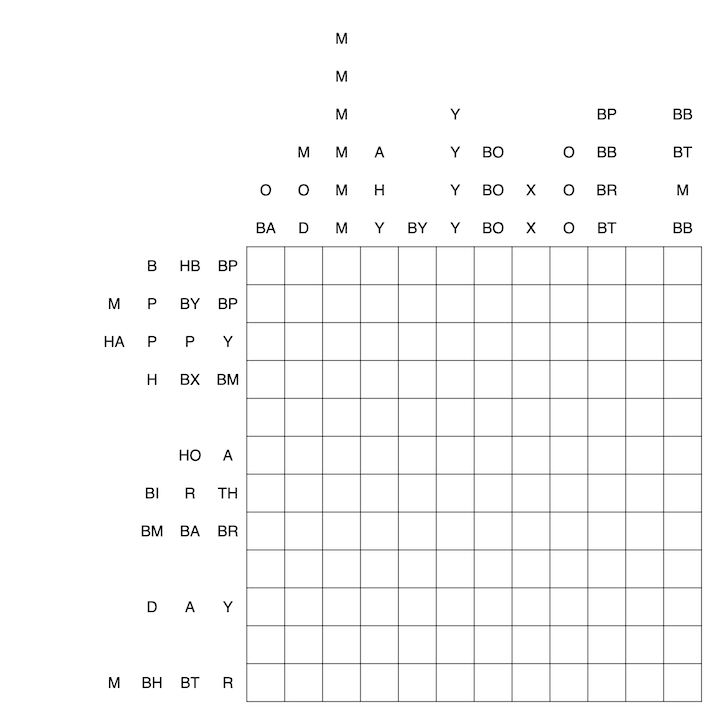
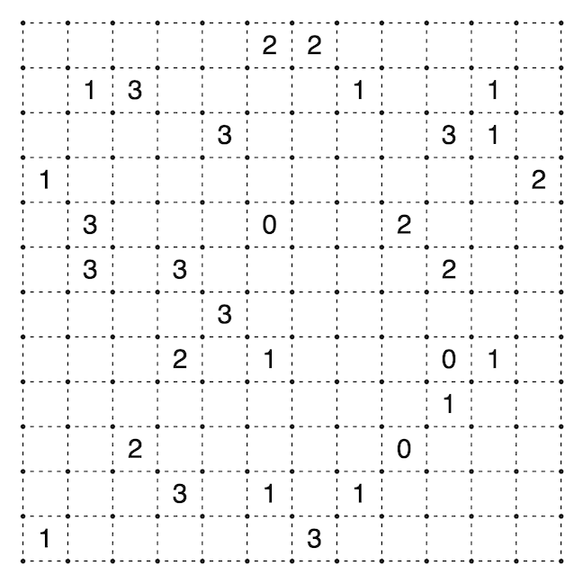

This is a puzzle for Myxo in celebration of his birthday and his recent marriage. Congratulations, my friend!
Below we have a standard cryptic roller-coaster where numbers from 1 to 12 must be placed exactly once in each row and column. The letters from HAPPY BIRTHDAY MYXO are to replace the values 0-11, and to accomodate this, all clues are given in base 12. However, when making the roller coaster, I calculated many of the sums incorrectly... I treated many cells as exactly one too low. So, I thought I'd make a second puzzle to help you find which cells are wrong.
The second puzzle is a slitherlink, but forgetful as I am, the puzzle is either an "Außen-knapp-daneben-Rundweg" or an "Innen-knapp-daneben-Rundweg"... I can't recall which one, but it shouldn't be too much of an issue to find out, the types are fairly different after all. Anyway, the incorrect cells for the roller coaster are exactly the same as those inside the loop here.
That should be everything, I hope you enjoy!


Notes:
'Außen-knapp-daneben-Rundweg' means that all clues outside the loop are one too high or one too low, while all clues inside the loop are correct.
'Innen-knapp-daneben-Rundweg' means that all clues inside the loop are one too high or one too low, while all clues outside the loop are correct.
To clarify, the above definitions only apply to the slitherlink clues: exactly one of the above two definitions holds as they are mutually exclusive.
The digits 'inside the loop' in the roller coaster grid are not exactly knapp daneben, you are to subtract 1 from each of those cells when calculating the sums. A similar interaction between grids with an example can be found here.